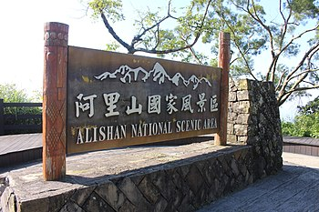

| 陽明山國家公園 | 玉山國家公園 | 阿里山國家公園 |
阿里山國家風景區位於臺灣嘉義縣東部，是由交通部觀光局規劃與管理的一座國家級風景特定區，設立於2001年。其範圍涵蓋了位於阿里山鄉、仍由林務局經營管理的阿里山國家森林遊樂區，並且擴大至附近的梅山鄉、竹崎鄉和番路鄉一帶的知名風景區。
阿里山實際上並不是一座山的名稱，只是特定範圍的統稱，正確說法應是「阿里山區」，地理上屬於阿里山山脈主山脈的一部份，東鄰玉山山脈，北接雪山山脈。某些資料指稱阿里山又名塔山，標高2,484公尺，實則不然：塔山為「阿里山區」之最高峰，標高2,663公尺。
